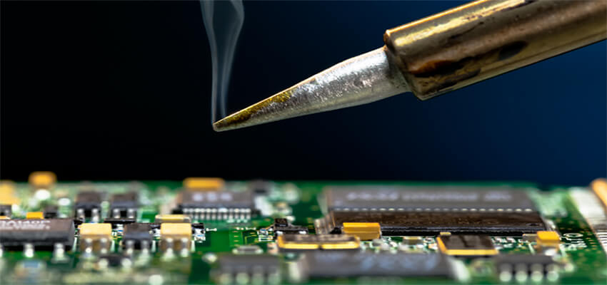
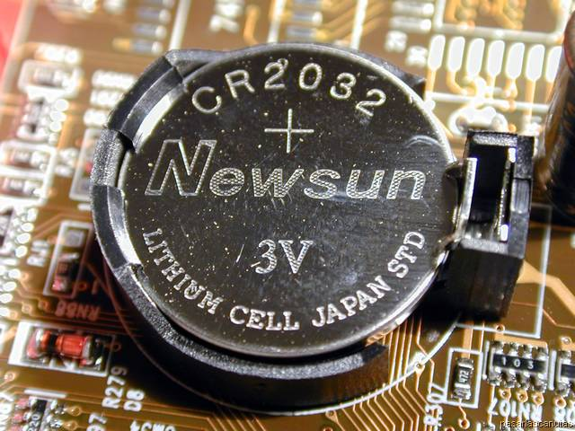
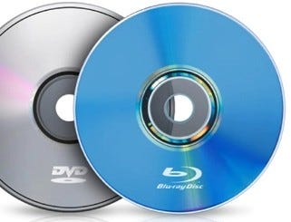
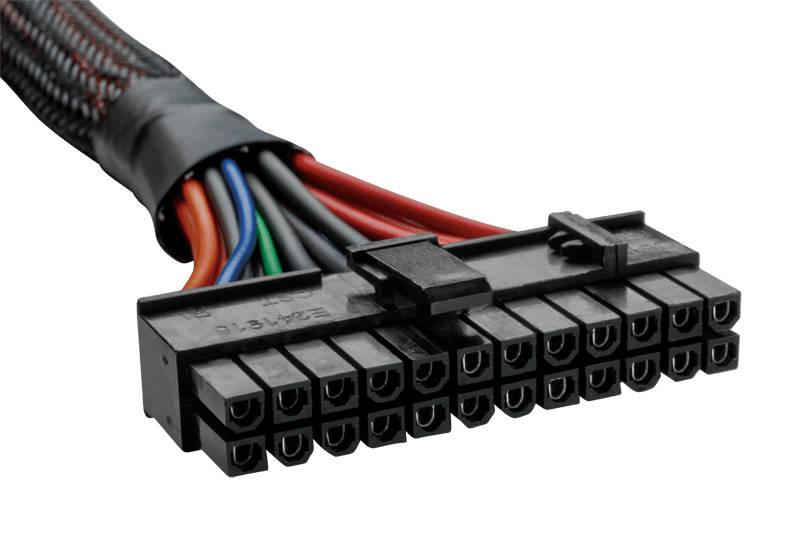
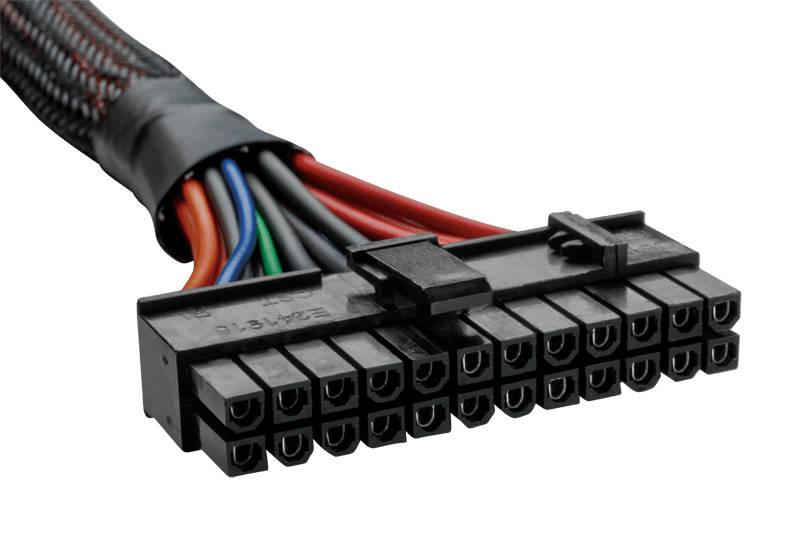

Componentes de la unidad
-
Aprender a dar mantenimiento preventivo y correctivo a una computadora.
-
Realizar el proceso de mantenimiento a una impresora.
-
Conocer y describir los sistemas operativos que utilizan los celulares.
Expectativa de logro
-
Ejecutan los procesos de desensamble y ensamble de una computadora para realizar limpieza interior y exterior de la misma.
-
Limpian una impresora a través de un software.
-
Identifican las capas de un sistema operativo móvil.
Contenidos
-
Mantenimiento preventivo
-
Mantenimiento correctivo
-
Sistemas operativos para celulares
Mantenimiento
Es el conjunto de actividades que deben realizarse a los equipos de cómputo con el fin de prevenir y corregir fallas, buscando que este continúe prestando el servicio correctamente.
Hay que tomar en cuenta que cuando los problemas son inevitables o existe algún descuido por parte del usuario, se requieren acciones inmediatas que solucionen estos problemas.
siderando estos dos aspectos el mantenimiento se clasifica en:
- Mantenimiento preventivo
-
Mantenimiento correctivo
Mantenimiento preventivo
Conjunto de actividades encaminadas a proteger los equipos de cómputo de posibles fallas, utilizando métodos de limpieza física y también métodos basados en el uso de software con la intención de ayudar a mejorar su funcionamiento y prevenir fallos repetitivos y serios, en consecuencia, se logra que la PC tenga más vida útil.
Objetivos del mantenimiento preventivo
- Disminuye riesgos de daños permanentes en el equipo.
- Disminuye costos en reparaciones de las máquinas.
- Somete al equipo a constante revisión técnica.
-
Aumenta la vida útil del equipo.
Ejemplos de mantenimiento preventivo
- Actualización de antivirus.
-
Eliminación de programas que no sirven (basura).
Limpieza de una PC
Es el proceso de mantener la máquina llure de suciedad en las principales manas y component obteniendo como resultado la apariericia de un reciente embalaje.
A continuación, se detalla algunas causas por las cuales es importante realizar el proceso de limpieza de la PC
-
La mezcla del polvo con el ambiente húmedo en casos extremos, ocasiona que este pueda ser un conductor eléctrico que provoca pequeñas fallas en los componentes electrónicos de una computadora, además que la acumulación del mismo reduce la eficiencia de los ventiladores de enfriamiento, por otra parte, el polvo cuando se acumula de forma uniforme sobre los circuitos integrados, forma un manto aislante el cual retiene el calor provocando que los circuitos disminuyan su rendimiento
-
Antes de realizar la limpieza de una computadora se debe contar con las herramientas necesarias para realizat correctamente cada paso del proceso de limpieza. Debemos considerar, que se debe desarmar la computadora para realizar la limpieza a fondo.
Herramientas utilizadas para el Desensamble de una PC

Pasos a seguir para el desensamble de una PC
- Apague la computadora personal.
- Revise la fecha de garantía de la computadora antes de abrirla, sí la garantía está dentro de la fecha, no abrir la computadora.
- Desconecte el cable de energia antes de manipular el interior de la computadora personal.
- Identifique el tipo de tornillos o mecanismo de fijación de la tapa del CPU, para poder tener acceso a los componentes internos.
- Colóquese la pulsera antiestática.
- Retire los tornillos, una vez que identificó el tipo, márquela para que no se confunda con los que se utilizan para fijar las tarjetas de expansión.
Una vez retirada la tapa superior, es importante identificar las partes internas de la PC, tales como:
Desensamble Paso a Paso de una Computadora
-
Quitar tapa superior
-
Colocarse la pulsera antiestática o descargarse la estática, tocando con las dos manos el piso o una parte de metal como el case para no dañar ningún componente interno de la PC.
-
Desconectar cada uno de los conectores y componentes de la PC y enumerarlos o realizar un bosquejo de la ubicación de los mismos en la tarjeta madre.
-
Realizar un croquis de la tarjeta madre y especificar la ubicación de cada cable en la misma.
-
Tomar una foto para recordar el orden en que va cada cable.
-
Retirar conectores de energía para CD ROM, disco duro.
-
Retirar conectores de energía para CD ROM, disco duro.
-
Quitar conector de energía ATX.
-
Desconectar las fajas IDE o SATA.
-
Retirar el ventilador y disipador, considerando que todos los seguros estén desbrochados de la tarjeta madre.
-
Retirar el procesador, presionar el seguro y halar al lado contrario del procesador
-
Retirar la memoria RAM considerando quitar en primera instancia, los seguros de manera cuidadosa.
-
Desensamblar los cables LED de la parte frontal de la PC.
-
Desmontar la tarjeta madre.
Limpieza interior
Se realiza mediante la expulsión del polvo incrustado en las distintas tarjetas y dispositivos internos mediante una aspiradora, brocha antiestática o aire comprimido. El aire comprimido es muy útil para retirar el polvo de sitios complicados como el ventilador y/o el interior de la fuente de alimentación.
-
Limpiar las ranuras de la memoria RAM.

Limpiar el ventilador y disipador, sugerimos desempolvar el ventilador y disipador con los siguientes objetos:
-
Compresor
- Aire comprimido
Limpiar la tarjeta madre, es recomendable limpiarla con un compresor o aire comprimido, no olvidemos limpiar las ranuras de expansión así como los puertos IDE.
Limpiar disco Duro
Limpieza Exterior
Se recomienda utilizar limpiadores con aplicación en espuma para evitar derrame de líquido, también puede utilizarse alcohol isopropílico. Para mejores resultados, rociar una franela o trapo con el limpiador de su preferencia y luego frotar la superficie exterior. En caso de espacios reducidos, como en el teclado se pueden utilizar hisopos.


Mantenimiento Correctivo
Es la solución de problemas va existentes en el equipo a través de la reparación o sustitución de cierto componentes de la computadora.
Objetivos del mantenimiento correctivo
- Repara daños ocasionados en el equipo
-
Corrige las fallas que se presentan sin un previo aviso.
-
Desarrolla modificaciones incluyendo pruebas.
-
Analiza las posibles soluciones con respecto a los daños.
Ejemplos del mantenimiento correctivo
-
Eliminación de virus.
-
Corrección de errores de los sistemas operativos.
Los problemas pueden darse en dos niveles:
-
Nivel físico (Hardware)
Cuando los problemas del hardware son detectados ya sea por el funcionamiento irregular o nulo. La solución a estos, puede consistir en la limpieza o reemplazo de las partes.
-
Nivel lógico (Software)
Los principales sintomas de software pueden solucionarse considerando las siguientes recomendaciones
-
Desinfección de virus.
-
Instalación/reinstalación de programas.
-
Configuración de controladores de dispositivos.
-
Instalación/reinstalación del sistema operativo.
-
Diagnóstico de unidades de almacenamiento.
Ensamble de una PC
Para el ensamble de una PC es importante contar con las siguientes herramientas:
Pasos para ensamblar una PC
-
Retirar las tapaderas del case (Cajón).
-
Colocar y asegurar la fuente de poder.
-
Instalar los soportes o separadores de la tarjeta madre.
-
Colocar la tarjeta madre en el case sobre los separadores y fijarla.

-
Una vez fijada la tarjeta madre en su posición, procedemos a colocar el procesador en su respectivo zócalo.

-
Instalar el disipador, ventilador y poner los soportes para fijarlo a la tarjeta madre.
-
Instalar la energía del ventilador, se reconoce en la placa madre como FAN.
-
Ensamblar la memoria RAM.
-
Instalar la bateria.

-
Instalar los LED's frontales (Encendido, apagado, reseteo).
-
Configurar la forma en que se requiere que las unidades de almacenamiento y lectura sean reconocidas por el sistema.
-
Instalación del CD, DVD-ROM, RW: Si la computadora es nueva o está agregando una nueva unidad, es importante quitar las tapas frontales de plástico y metal para poder colocar una unidad lectora (CD, DVD-ROM/RW).

-
Instalar y fijar el disco duro.
-
Conectar cable de alimentación e instalar las fajas IDE o SATA al disco duro unidad óptica.

-
Instalación de la tarjeta gráfica (en caso de teneria) de no ser asi, avanzar al siguiente paso.

-
Una vez cerrado el case, se procede a conectar los enchufes traseros de la caja para poner en marcha la PC, sin olvidar revisar antes de cerrar que todas las unidades están correctamente instaladas y conectadas.

 
